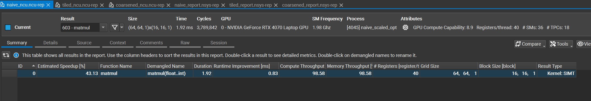
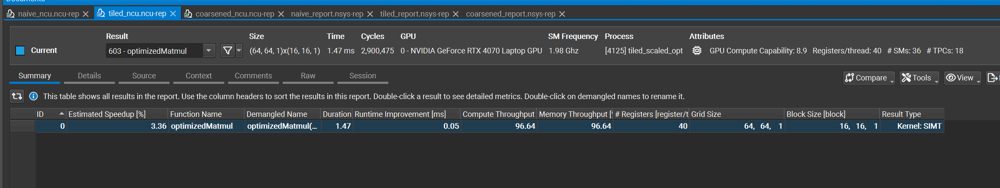
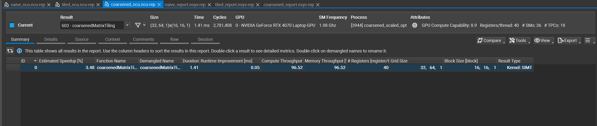

Aug 2026 · 8 min read
Building a GPU inference stack from scratch, and measuring it honestly
FlashAttention-2 forward and backward in Triton, an LLM.int8()-style INT8 post-training quantizer, a tiled matmul against cuBLAS, and CUDA fundamentals profiled with Nsight Compute. Every number has the hardware it was measured on stated next to it, and the sections where my implementation loses to the production baseline are the ones I've written out in the most detail.
Key numbers
01What this is
This is an end-to-end GPU inference stack built from first principles: the CUDA fundamentals underneath it, the Triton kernels on top of those, an attention implementation that replaces PyTorch's, and a quantizer that replaces bitsandbytes'. I wrote each piece from scratch rather than importing it because importing it teaches you the API and nothing else.
The rule I set for myself was that every component gets benchmarked against the production library it is meant to replace (cuBLAS, PyTorch SDPA, bitsandbytes) rather than against a naive version of itself. Benchmarking against your own first draft is how you generate impressive-looking numbers that mean nothing. Two of the four sections below end with my implementation losing, and those are the interesting ones.
One correction up front, because it affects the headline number and I would rather you hear it from me than find it in the source. The FlashAttention-2 benchmark as originally written counted FLOPs asymmetrically between my kernel and the baseline, which inflated my throughput by exactly 2×. Section 02 explains the mistake. The matmul, quantization, and CUDA sections are unaffected.
- Triton, FA-2, quant
- NVIDIA RTX 5080 Laptop, 16 GB VRAM, CUDA 12.9, driver 577.03, WSL2 on Windows
- PMPP CUDA study
- NVIDIA RTX 4070 Laptop, sm_89, 36 SMs, compiled
nvcc -O3 -arch=sm_89 - PyTorch
- 2.12.0
- Model under test
- Encoder-decoder transformer, 6 blocks each, 8 heads, d_model 512, 200K Tatoeba EN–DE pairs
The two GPUs are never mixed. Every table below states which card it ran on.
02FlashAttention-2 in Triton
Forward and backward, written from scratch in Triton and wrapped in a custom torch.autograd.Function so it drops into a real transformer as its attention mechanism. The forward kernel tiles Q against blocks of K and V with an online softmax, rescaling the accumulator by exp(m_old - m_new) rather than materialising the full seq_len × seq_len attention matrix. The backward recomputes the attention probabilities from the saved log-sum-exp statistic instead of storing them, which is the whole memory argument for FlashAttention.
Kernel structure and correctness checks details
Causal masking is applied inside the kernel at line level, combined with the padding mask, before the softmax. Inputs are fp16 with fp32 accumulation in the tl.dot calls. The backward splits into three kernels: a preprocessing pass computing the row-wise D term, a dK/dV kernel, and a dQ kernel.
Each kernel was checked against a reference PyTorch implementation on identical inputs, with torch.allclose at atol=1e-2, rtol=1e-2. All passed.
| Tensor | Max abs diff | Mean abs diff | allclose |
|---|---|---|---|
| Forward output | 0.00048828 | 0.00017583 | pass |
| Preprocess (D) | 0.02055931 | 0.00455718 | pass |
| dK | 0.00317383 | 0.00035345 | pass |
| dV | 0.00390625 | 0.00018393 | pass |
| dQ | 0.00229645 | 0.00042145 | pass |
Memory: the result I can stand behind
The baseline is scaled_dot_product_attention(Q, K, V, is_causal=True) with the backend left unpinned, so PyTorch selects its own, in practice its fused flash kernel. That is the right thing to compare against: it is what someone would actually use instead of my kernel. Peak allocated memory tracks SDPA almost exactly and grows mildly with sequence length rather than quadratically: 258.0 MB at seq_len 512, and 288.0 MB at seq_len 8192.
Peak memory matches SDPA at every sequence length
| seq_len | Triton peak MB | SDPA peak MB |
|---|---|---|
| 512 | 258.0 | 258.0 |
| 1024 | 260.0 | 260.0 |
| 2048 | 264.0 | 264.1 |
| 4096 | 272.0 | 272.1 |
| 8192 | 288.0 | 288.3 |
Where it loses, and why
SDPA is faster than my kernel at long sequence lengths. The reason is that my inner loop visits every K/V block and masks the ones above the diagonal, so at long sequence lengths roughly half the work I perform is computed and then discarded. SDPA's flash backend skips those blocks entirely (causal block-skipping), which I have not implemented. That is the single largest gap between my kernel and a production one, and closing it is the next thing I would do.
Why there is no throughput table here
My benchmark harness computed throughput for the two sides with different formulas. My kernel was credited with 4·b·h·n²·d FLOPs (the full, non-causal attention cost) while the baseline was credited with 2·b·h·n²·d, the causal cost.
Both implementations compute causal attention; my kernel applies the causal mask unconditionally and has no toggle. Crediting one side at the full rate and the other at the causal rate makes the two columns non-comparable, so the throughput numbers that harness produced do not support a claim in either direction.
A second problem sat underneath it: the percent-of-peak column divided by a constant the baseline itself exceeded, reporting 128.1% of peak at seq_len 8192. Nothing can exceed peak, so that constant was not the right ceiling for the path the baseline takes.
Rather than publish a repaired number derived from the same run, I have removed the throughput comparison until I have re-measured it with symmetric accounting. The memory table above is unaffected: it was never a function of the FLOP count.
03INT8 post-training quantization
An LLM.int8()-style outlier-aware mixed-precision matmul, written from scratch and applied to the encoder-decoder transformer above: keep a small set of activation-derived outlier channels in full precision, quantize everything else to INT8.
Calibration and QuantizedLinear internals details
A calibration pass over the trained model used forward hooks to track the running maximum activation magnitude per input channel across every nn.Linear. Outlier channels were selected with a dynamic per-layer threshold (mean plus three standard deviations of per-channel activation magnitude) rather than a fixed cutoff, because activation distributions varied meaningfully across layers.
QuantizedLinear splits each weight matrix into a full-precision outlier column set and an INT8 column set quantized with a per-output-neuron scale. At inference it splits the incoming activation the same way, quantizes the normal columns dynamically with a per-token scale, runs two matmuls, dequantizes the INT8 path by the product of the activation and weight scales, then sums with the outlier path and the bias.
Single-layer correctness: mean absolute error 0.0038 against output magnitudes of roughly 0.1–0.5. That is consistent with INT8 rounding, not with an implementation bug: a bug produces errors that scale with the input or concentrate in particular channels, and this doesn't.
Perplexity: original 21.8669, my QuantizedLinear 21.8698, bitsandbytes Linear8bitLt 21.8653. All three within 0.02% of each other, so no measurable degradation on this dataset.
Static footprint: mine wins
Peak GPU memory: bitsandbytes wins
| Model | Static footprint | Peak GPU memory |
|---|---|---|
| Original | 430.52 MB | 2534.08 MB |
| Custom QuantizedLinear | 230.77 MB (−46.4%) | 2397.27 MB (−5.4%) |
| bitsandbytes | 304.52 MB (−29.3%) | 2308.47 MB (−8.9%) |
The result splits in two directions, and both halves are worth reporting. bitsandbytes wins peak inference memory (−8.9% vs −5.4%), which most likely reflects more mature temporary-allocation handling in its CUDA kernel path against a forward pass I wrote for correctness rather than for allocation efficiency.
Mine wins static footprint by a wide margin, and I want to be clear about where that comes from. The output projection is nn.Linear(512, 52239), roughly 26.7 million parameters. My QuantizedLinear quantizes it; in the bitsandbytes comparison that layer was left as a regular nn.Linear. That single exclusion is where most of the 46.4% versus 29.3% gap comes from. My notes reference a dimensional constraint I did not write down at the time, and rather than reconstruct a plausible-sounding reason after the fact, I've left it as an open item.
Translation quality details
Fifteen test sentences covering statements, questions, and varied structures, greedy decoding, run through all three variants. All fifteen identical, word for word, across original, custom-quantized, and bitsandbytes-quantized.
Two sentences, "What time is it?" and "Where is the bathroom?", came out grammatically imperfect in all three equally. That is a base-model limitation on question structures, not a quantization effect. It shows up identically in the unquantized model, which is exactly how you tell the difference.
04Triton tiled matmul vs cuBLAS
A hand-written tiled matmul in Triton (2D program grid, K-loop with masked loads and tl.dot accumulation, autotuned over block sizes) benchmarked against cuBLAS via torch.matmul in true FP32, with TF32 disabled on both sides. Left on, PyTorch silently routes the cuBLAS call through the tensor cores, and the comparison stops being one. With TF32 off, both paths hit the same units. The ceiling is the mobile 5080's ~32 TFLOP/s FP32 peak.
Within ~20% of cuBLAS, and both regress at 4096
| Size (N³) | Triton TFLOP/s | cuBLAS TFLOP/s | Triton % peak | cuBLAS % peak |
|---|---|---|---|---|
| 512 | 8.77 | 8.24 | 27.4% | 25.7% |
| 1024 | 15.95 | 16.64 | 49.9% | 52.0% |
| 2048 | 19.30 | 21.78 | 60.3% | 68.1% |
| 4096 | 16.53 | 20.32 | 51.7% | 63.5% |
- Ahead at 512, but that isn't a real win. My kernel edges cuBLAS at 512 (8.77 vs 8.24). Both are overhead-bound at that size, so this is small-matrix noise rather than a kernel advantage, and I'd rather say so than bank it.
- cuBLAS pulls ahead from 1024 up, but never by much: about 11% at 2048 and 19% at 4096. In true FP32 with no tensor-core path available to either side, this is a fair fight, and landing within ~20% of NVIDIA's own library with a hand-derived kernel is the result worth reporting.
- Efficiency climbs then regresses. 27% → 50% → 60% of peak from 512 to 2048 as launch overhead amortizes over more compute. At 4096 both drop together (Triton 60→52%, cuBLAS 68→64%).
05CUDA fundamentals from PMPP
A different machine and a different question. Starting from a naive 1024×1024 matmul kernel, apply progressive optimizations and use Nsight Compute to verify each mechanism actually fired at hardware level, not just that the wall clock moved. Correctness was verified with an all-ones input, where every output element must equal exactly 1024.0. Timing is cudaEvent around the launch only, averaged over 3 runs.
| Kernel | Time (ms) | Speedup | GFLOPs/s |
|---|---|---|---|
| Naive | 3.0045 | 1x | 714.6 |
| Tiled | 2.5589 | 1.17x | 838.9 |
| Coarsened | 2.4240 | 1.24x | 885.7 |
torch.matmul | 0.227 | 13.2x | 9457.7 |
| Kernel | Duration | Compute thpt | Memory thpt | Reg/thread | L1TEX est. speedup |
|---|---|---|---|---|---|
| Naive | 1.92 ms | 98.58% | 98.58% | 40 | 43.13% |
| Tiled | 1.47 ms | 96.64% | 96.64% | 40 | 3.36% |
| Coarsened | 1.41 ms | 96.52% | 96.52% | 40 | 3.48% |



What the profiler actually taught me: L2, bottlenecks, registers, tile width details
Coalescing was measurably fixed, but the wall clock barely moved. 43.13% → 3.36% is a clean mechanical win, yet tiling only bought 1.17x. The likely reason is that the 4070's L2 is large enough relative to the 4 MB per-matrix footprint at N=1024 to already absorb some of naive's redundant reads. Textbook examples promise 5–10x; on this hardware at this size, they don't materialise.
None of the three kernels is cleanly memory- or compute-bound. Compute and memory throughput both sit at ~97–98% in all three. Closing the remaining 13.2x gap to torch.matmul needs a different compute path entirely (tensor cores), not a better FP32 CUDA-core kernel.
Registers per thread stayed flat at 40, which I did not expect. Coarsening holds Pvalue[COARSE_FACTOR] per thread instead of a scalar, so I predicted a higher register count. The compiler evidently had headroom at this factor. Worth rechecking at COARSE_FACTOR=4, where occupancy tradeoffs should actually surface.
TILE_WIDTH=16 was chosen deliberately. It divides N=1024 evenly, so no boundary checks are needed, and it gives 256 threads/block, enough for shared-memory reuse to matter. An earlier accidental run at TILE_WIDTH=2, left over from 4×4 correctness testing, took 39 ms, about 15x slower than naive, because 4-thread blocks have almost no reuse to amortize and add heavy launch overhead. I'm keeping that in because it's the clearest evidence I have that I understand why the parameter matters rather than just which value to use.
06Open items
Stated plainly, because a list of finished things with no unfinished things next to it isn't credible.
- Re-run the FlashAttention-2 benchmark with symmetric FLOP accounting in the harness itself, and with a defensible peak constant.
- Skip the masked K/V blocks in the FA-2 inner loop. Currently every block is visited and roughly half the work is discarded at long sequence lengths.
- Document the bitsandbytes exclusion. My notes reference a dimensional constraint on the output projection layer that I did not record at the time. It needs re-deriving from the actual failure rather than reconstructing after the fact.
- 2D block tiling / register tiling toward closing the gap to
torch.matmul. Not started. - A paged KV cache and continuous batching inference server. Since built: see Building a paged inference engine from scratch.
- Speculative decoding. Not started.
07Reproduce it
Everything is in github.com/VrajPatel105/cpp-gpu-inference. The folders that map to the sections above:
| Section | Folder |
|---|---|
| FlashAttention-2 | flash-attention/ |
| INT8 quantization | quantization/ · quantization/llm.int8()/ |
| Triton kernels | triton-kernels/ |
| CUDA / PMPP | gpu-fundamentals-pmpp/cuda/ |
| Transformer | en-de-transformer/ |
The FlashAttention correctness checks and benchmark live in flash-attention/flash_attention.py under __main__. The CUDA kernels are compiled with nvcc -O3 -arch=sm_89 and profiled with ncu --set full; the raw .ncu-rep and .nsys-rep files are committed alongside the screenshots above, so the counters can be checked rather than taken on trust.